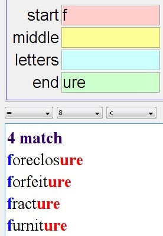
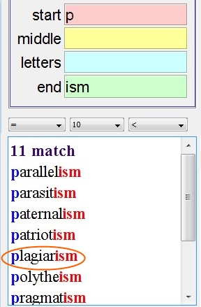
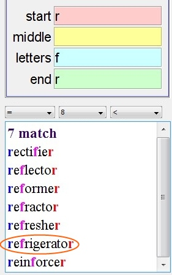
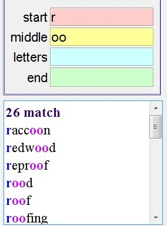
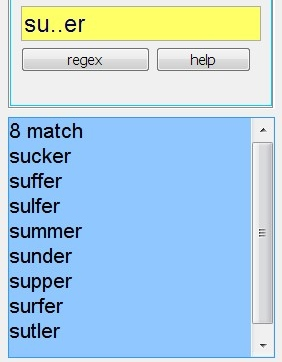

Dic has 29,000 words
wiki has 150,000 words
use color highlight
to show matched letters
S is start letter
M is letters at middle, and
follow order
L is letters at middle, but not follow order
E is end letter
Example 1 : I don't know how to spell "furniture"
I only know the word start with "f", end with "ure", and its length more than
8
start "f"
end "ure"
length > 8

Example 2: "plagiarism"
start : p
end : ism
length > 10

Example 3: "refrigerator"
start : r
end : r
contain letter : f
length > 8

Example 4: "raccoon"
start : r
contain string : oo

Example 5 : I don't know how to spell "suffer"
I only know it starts with "su", and follow two
letters, and end with "er"
